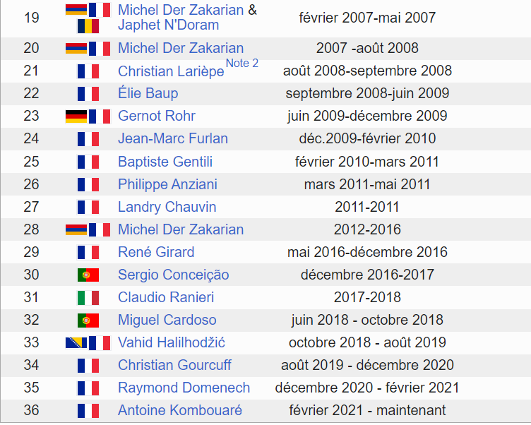
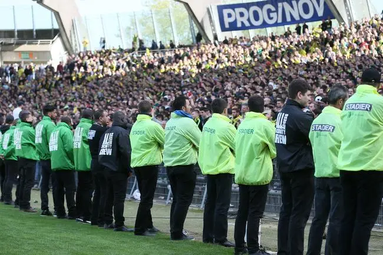

Les principales raisons

17 entraîneurs en 15 ans
Une preuve de l'instabilité du club et de la gestion désastreuse

Non-respect de l'institution et des supporters
WK ferme totalement le dialogue aux supporters en interissant certaines banderoles

Mauvais résultats
Loin de sa réputation d'antan, LE FC Nantes devient le FC KITA et joue le maintien